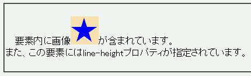
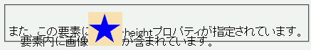

要素内に画像 が含まれています。
が含まれています。
また、この要素にはline-heightプロパティが指定されています。
画像が含まれる要素に対してline-heightプロパティを指定して行高を調整すると、画像の配置が狂う。
<p style="line-height: 1.3;">要素内に画像<img src="img01.png" alt="画像">が…<br> また、…</p>
要素内に画像 が含まれています。
が含まれています。
また、この要素にはline-heightプロパティが指定されています。
行高を親要素の行高の1.3倍に設定しています。
IE6.0での表示（標準モード）
NN4.78での表示
NN4.78では未修正です。